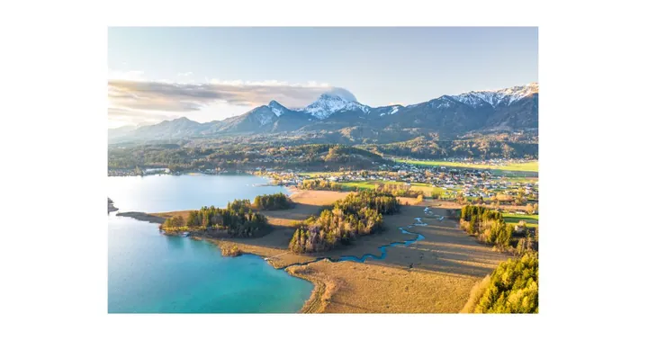

da mar 8 set a dom 13 set · dalle 12:00
European Bike Week 2026
Titolo originale: European Bike Week 2026
Raduno internazionale di moto al Faaker See, con esposizioni, prove, musica e appuntamenti anche a Villach.
 Indicazioni
Indicazioni
- Costi e prenotazioni
- Accesso generale gratuito · Prenotazione solo per attività e tour specifici
- Programma
- Date confermate; orari parziali. Mancano gli orari di parata e concerti; la chiusura delle aree presenta una discordanza nella fonte.
- In caso di maltempo
- Le attività esterne possono variare; controllare roadmap e avvisi ufficiali.
- Note
- Programma in italiano. Orari di parata e concerti ancora da acquisire.
L’EVENTO
Descrizione completa
European Bike Week è uno dei maggiori raduni motociclistici europei e trasforma l’area del Faaker See in un punto d’incontro internazionale. Il cuore dell’evento è l’Harley Village a Faak am See, affiancato da iniziative diffuse attorno al lago e a Villach.
L’edizione 2026 è annunciata dall’8 al 13 settembre. Oltre al villaggio, il programma ufficiale presenta prove di moto, concerti, una parata e una mostra di motociclette personalizzate.
IL PROGRAMMA
Programma e orari
Tradotto dall’inglese. La fonte scrive «sabato 13», ma il 13 settembre è domenica: gli orari conclusivi richiedono conferma.
Martedì 8 settembre
- 12:00–22:00 · Apertura delle aree Harley-Davidson.
Attività annunciate
- Esposizione modelli 2026 e simulatore statico Jumpstart, utilizzabile senza patente.
- Prove di moto e area Pan America per attività fuoristrada.
- Concerti gratuiti per cinque serate, al Saloon Bar e all’Harley Bar; scaletta non indicata.
- Stand di concessionari, accessori, abbigliamento e personalizzazioni; area soci H.O.G.
Parata e appuntamento a Villach
- Parata: ritrovo alla statua Harley-Davidson, rotatoria Rosental Straße. Giorno e ora non specificati nella pagina consultata.
- Custom Bike Show in Hauptplatz, a Villach: sei categorie. Giorno e orario non specificati.
Orari successivi
- 10:00–20:00 · Fascia pubblicata dal 9 settembre; giorno finale ambiguo nella fonte.
- Ristorazione e shopping proseguono fino a tardi. Chiusura generale il 13 settembre, senza un’ora finale verificata.
INFORMAZIONI UTILI
Prima di partire
- Parata e Custom Bike Show hanno sedi diverse dal villaggio: consulta il programma prima di scegliere il punto di arrivo.
- Testi tradotti in italiano; conservati i nomi propri di luoghi e attività.
- Contatti: Informazioni tramite Visit Villach ed European Bike Week
ORGANIZZAZIONE